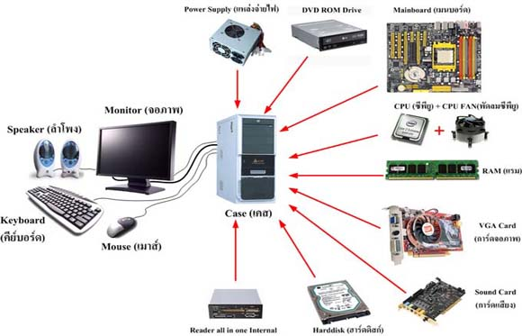

หน่วยรับข้อมูล
หน่วยรับข้อมูล
หน่วยรับข้อมูล (input unit) เป็นส่วนที่ทำหน้าที่รับข้อมูลจากผู้ใช้เข้าสู่คอมพิวเตอร์ เช่น ตัวอักษร ตัวเลข สัญลักษณ์ เป็นต้น โดยจะแปลงข้อมูลให้ไปอยู่ในรูปของสัญญาณไฟฟ้าที่คอมพิวเตอร์เข้าใจ โดยนำมาจัดเก็บที่หน่วยความจำหลัก และใช้ประมวลผลได้ อุปกรณ์หน่วยรับข้อมูลที่นิยมใช้ในปัจจุบัน มีดังนี้
